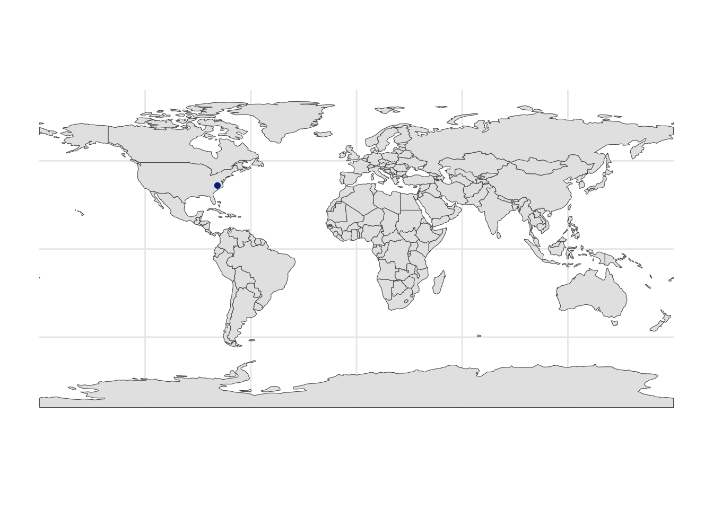
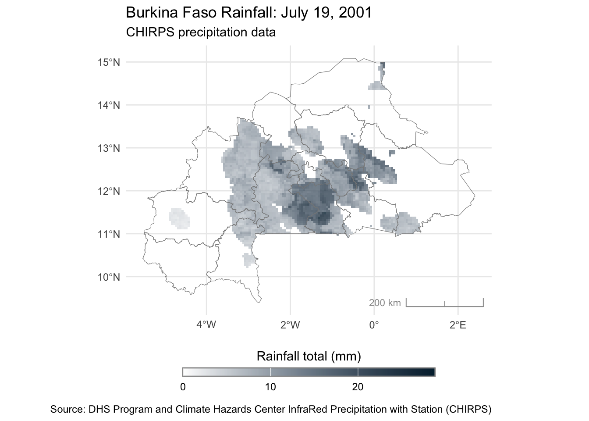

# if you already have these packages, try loading them outside the suppress
# function to see if there are any key messages like update suggestions
# install.packages("spDataLarge", repos = "https://geocompr.r-universe.dev")
suppressPackageStartupMessages({
library(tidyverse)
library(sf)
library(tmap)
library(spData)
#library(spDataLarge)
library(leaflet)
library(terra)
library(stars)
library(chirps)
library(usethis)
library(ggspatial)
})Mapping in R
Credits
This material is based on Dr. Emily Burchfield’s excellent guide to mapping in R and the book Geocomputation with R by Lovelace, Nowosad, and Muenchow.
Setup
There is not a single mapping package for R that will suit all of your needs. We’ll review several useful packages today. Start by installing any packages you don’t have yet.
We need to get some data:
# run this manually once
# Burkina Faso boundary shapefile from https://www.idhsdata.org/idhs/gis.shtml
usethis::use_course(url = "https://github.com/ericpgreen/glhlth562/raw/main/materials/mapping/geo_bf2003_2010.zip", destdir = getwd())Basic Concepts
Vector and Raster
There are two main types of spatial data: vector and raster. Vector data includes points (a pin on a map), lines (a road), and polygons (a country shape). Raster data divides some surface into equal-sized cells and displays information contained in each cell (think satellite imagery, weather maps).
Simple Features
Simple features is an open standard developed and endorsed by the Open Geospatial Consortium (OGC), a not-for-profit organization whose activities we will revisit in a later chapter (in Section 8.2). Simple features is a hierarchical data model that represents a wide range of geometry types. Of 18 geometry types supported by the specification, only 7 are used in the vast majority of geographic research; these core geometry types are fully supported by the R package sf (Pebesma 2018). -GWR
The sf package implements the simple features (or simple feature access) standards. Simple features is a ISO standard (19125-1:2004) describing how spatial properties of objects are represented in computers. A feature can be anything from a single point to a set of polygons (see Figure 1). Every sf object has a geometry column that describes where the feature exists on Earth. The sf package is comprehensive, plays nicely with the tidyverse, and is the basis of several mapping packages.

Let’s take a look at the world dataset included with the spData package:
glimpse(world)Rows: 177
Columns: 11
$ iso_a2 <chr> "FJ", "TZ", "EH", "CA", "US", "KZ", "UZ", "PG", "ID", "AR", …
$ name_long <chr> "Fiji", "Tanzania", "Western Sahara", "Canada", "United Stat…
$ continent <chr> "Oceania", "Africa", "Africa", "North America", "North Ameri…
$ region_un <chr> "Oceania", "Africa", "Africa", "Americas", "Americas", "Asia…
$ subregion <chr> "Melanesia", "Eastern Africa", "Northern Africa", "Northern …
$ type <chr> "Sovereign country", "Sovereign country", "Indeterminate", "…
$ area_km2 <dbl> 19289.97, 932745.79, 96270.60, 10036042.98, 9510743.74, 2729…
$ pop <dbl> 885806, 52234869, NA, 35535348, 318622525, 17288285, 3075770…
$ lifeExp <dbl> 69.96000, 64.16300, NA, 81.95305, 78.84146, 71.62000, 71.039…
$ gdpPercap <dbl> 8222.2538, 2402.0994, NA, 43079.1425, 51921.9846, 23587.3375…
$ geom <MULTIPOLYGON [°]> MULTIPOLYGON (((-180 -16.55..., MULTIPOLYGON ((…class(world)[1] "sf" "tbl_df" "tbl" "data.frame"You can see that world is a sf dataframe with non-geographic country-level attributes and a final column that contains the geography information for plotting country polygons.
Base R
We can do a lot with base R, starting with a simple call to plot() which plots every variable in world:
plot(world)Warning: plotting the first 9 out of 10 attributes; use max.plot = 10 to plot
allWe can add layers to a base plot with the add = TRUE parameter.
# create asia as a union of countries in asia
asia <- world %>%
filter(continent == "Asia") %>%
st_union()plot(world["pop"], reset = FALSE)
plot(asia, add = TRUE, col = "red")ggplot()
Some folks will plot maps exclusively with base R. They are not my people 😂 You’re much more likely to find me using ggplot2. You can wrangle and plot a sf dataframe in familiar ways.
world %>%
mutate(asia = case_when(
continent == "Asia" ~ 1,
TRUE ~ 0
)) %>%
ggplot(aes(fill=asia)) +
geom_sf() +
theme_minimal() +
theme(legend.position = "none") ggplot2 also makes it easy to add different spatial features as layers. Here we start with the world and add a point for Duke.
duke <- st_sfc(st_point(c(-78.939133, 36.001465)), crs = "EPSG:4326")
dukeGeometry set for 1 feature
Geometry type: POINT
Dimension: XY
Bounding box: xmin: -78.93913 ymin: 36.00147 xmax: -78.93913 ymax: 36.00147
Geodetic CRS: WGS 84POINT (-78.93913 36.00147)# here I'm not starting with the data and piping, but I could have
ggplot() +
geom_sf(data = world) +
geom_sf(data = duke, color = "#003087") +
theme_minimal() +
theme(legend.position = "none")
Working with Rasters
terra and stars have become the go-to packages for working with raster data in R. To introduce you to raster data, we’ll jump into a tutorial on working with rainfall data from ClimateSERV. We’ll use the chirps package to get some rainfall data for Burkina Faso, using a country shapefile as a mask to tell the API which raster cells we want (the ones that fall inside Burkina Faso).
# load shapefile of Burkina Faso boarders
bf_borders <- st_read(
here::here("geo_bf2003_2010", "geo_bf2003_2010.shp"),
quiet = TRUE
)
# Get CHIRPS data from 2001-2010 for Burkina Faso
bf_precip <- get_chirps(
vect(bf_borders),
dates = c("2001-07-19", "2001-07-21"),
server = "CHC"
)Fetching data as GeoTIFF files from CHC server Getting CHIRPS in a .05 deg resolution bf_precip <- mask(bf_precip, bf_borders, touches = FALSE)bf_precip is a SpatRaster object from the terra package containing the raster stack of precipitation data for Burkina Faso from three days in 2001 (using the full time series in their tutorial would take too long to download).
bf_precipclass : SpatRaster
dimensions : 114, 158, 3 (nrow, ncol, nlyr)
resolution : 0.05, 0.05 (x, y)
extent : -5.499997, 2.400003, 9.399999, 15.1 (xmin, xmax, ymin, ymax)
coord. ref. : lon/lat WGS 84 (EPSG:4326)
source(s) : memory
names : chirps-v2.0.2001.07.19, chirps-v2.0.2001.07.20, chirps-v2.0.2001.07.21
min values : 0.00000, 0.00000, 0.00000
max values : 28.76348, 54.74457, 33.05365 This raster layer contains 114 rows and 158 columns of pixels. The value in each pixel represents the rainfall (in millimeters) for an area 0.05 degrees longitude by 0.05 degrees latitude (shown in the resolution field).
Let’s plot the rainfall on July 19, 2001. To do this we’ll extract the raster for this day and plot with ggplot() and some functions from the ggspatial package (always multiple ways to do something!).
# Create map of rainfall for single day
precip_day <- bf_precip[["chirps-v2.0.2001.07.19"]]
ggplot() +
ggspatial::layer_spatial(
precip_day,
alpha = if_else(values(precip_day) == 0, 0, 0.8),
na.rm = TRUE
) +
ggspatial::layer_spatial(bf_borders, fill = NA, color = "#888888") +
#ggspatial::layer_spatial(bf_gps, fill = NA, size = 2, alpha = 0.4) +
labs(
title = "Burkina Faso Rainfall: July 19, 2001",
subtitle = "CHIRPS precipitation data",
fill = "Rainfall total (mm)",
caption = "Source: DHS Program and Climate Hazards Center InfraRed Precipitation with Station (CHIRPS)"
) +
ggspatial::annotation_scale(
aes(style = "ticks", location = "br"),
text_col = "#999999",
line_col = "#999999"
) +
scale_fill_gradient(low = "white", high = "#00263A", na.value = NA) +
theme_minimal() +
theme(legend.position = "bottom") +
guides(
fill = guide_colorbar(
title.position = "top",
title.hjust = 0.5,
label.hjust = 0.5,
barwidth = 15,
barheight = 0.5,
ticks.colour = "white",
frame.colour = "#999999"
)
)
If you are following their tutorial, I commented out the line adding DHS cluster coordinates because to get this data you need to register with the DHS program.
somethign